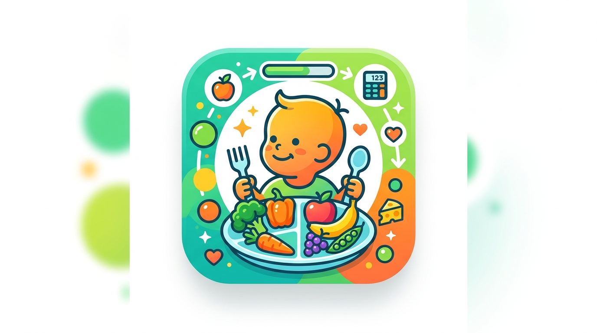

Pantau status gizi, kebutuhan kalori harian, dan rekomendasi nutrisi lengkap untuk si kecil usia 0–59 bulan berdasarkan standar kesehatan resmi.

Masukkan data si kecil dengan lengkap untuk hasil yang akurat
Isi form di sebelah kiri dan tekan "Hitung" untuk melihat analisis lengkap kebutuhan gizi si kecil.
Informasi penting tentang nutrisi si kecil berdasarkan tahap usia
ASI eksklusif adalah sumber nutrisi terbaik. Mengandung semua zat gizi yang dibutuhkan, termasuk antibodi pelindung.
Masa MPASI dimulai. Perkenalkan makanan pendamping ASI secara bertahap dengan tekstur sesuai perkembangan.
Anak mulai makan makanan keluarga. Pastikan asupan energi dan protein cukup untuk mendukung pertumbuhan optimal.
Usia pra-sekolah dengan kebutuhan energi tinggi untuk aktivitas bermain dan perkembangan otak yang pesat.
Pahami arti status gizi berdasarkan Z-Score WHO
| Indikator | Z-Score | Status | Tindakan |
|---|---|---|---|
| BB/U (Berat Badan menurut Umur) | < -3 SD | Gizi Buruk | Segera ke fasilitas kesehatan |
| -3 s/d <-2 SD | Gizi Kurang | Konsultasi ke ahli gizi | |
| -2 s/d +1 SD | Gizi Baik | Pertahankan pola makan | |
| > +1 SD | Risiko Obesitas | Pantau asupan kalori | |
| TB/U (Tinggi Badan menurut Umur) | < -3 SD | Stunting Berat | Intervensi segera |
| -3 s/d <-2 SD | Stunting | Tingkatkan asupan protein | |
| ≥ -2 SD | Normal | Pertahankan pertumbuhan |
Disclaimer: Aplikasi ini bersifat informatif dan tidak menggantikan konsultasi medis profesional. Selalu konsultasikan kondisi gizi anak Anda kepada dokter anak atau ahli gizi terdaftar.